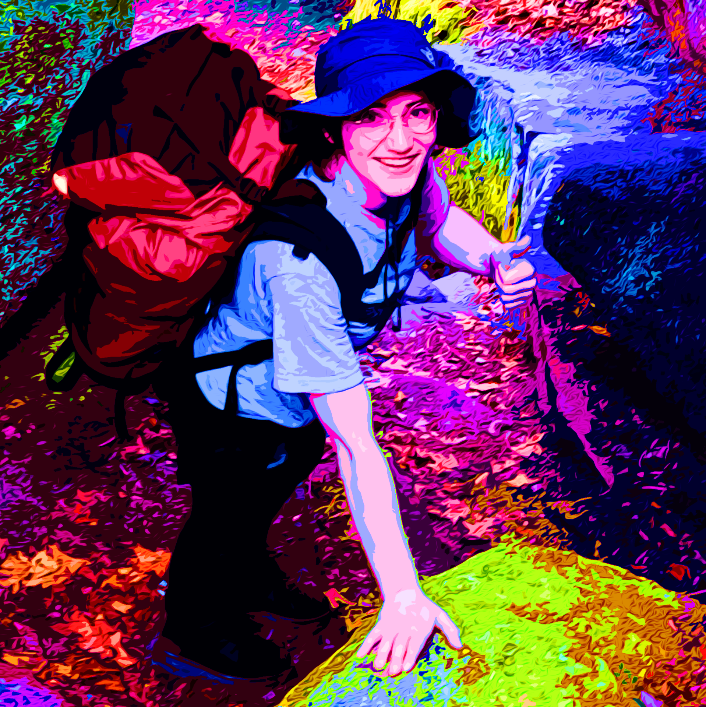

Simple Joys of Elias Lenkner |
|  |
|
The laughter of childhood echoes through memories of Pymatuning Lake, where summer days were spent splashing in the water and conquering playground adventures. Family gathered, siblings and cousins playing until the sun dipped below the horizon. These cherished moments left an imprint, shaping a love for togetherness and simple joys for Elias. Growing up as the youngest sibling meant learning to navigate both companionship and solitude. “I had to entertain myself a lot,” Elias shared, reflecting on hours spent in imaginative play. This independence fostered creativity, a trait that remains central to their identity today. Yet, the warmth of family traditions, particularly the ritual of decorating the Christmas tree with treasured ornaments, provided a comforting sense of continuity. “Each of us has our own box of ornaments,” and for Elias, “It’s like unwrapping memories every year.” Looking ahead, the future remains an open canvas. While no rigid plans are set, there are dreams—living with close friends, caring for a cat, and finding fulfilling work. “I just want to be happy in what I do,” they mused. The desire to create also extends beyond career aspirations, with hopes of publishing poetry or even opening a small handmade crafts shop. “It’s not about fame. I just want to share something meaningful.” A deep appreciation for security, creativity, and empathy shapes their worldview. “I want to be remembered as someone who made people happy,” Elias proclaimed. While naturally non-confrontational, they feel strongly about standing up for others. Challenges are met with patience rather than conflict. “I might not always speak up for myself, but I never hesitate when someone else needs support.” Elias told a story about confronting a girl who stole her shirt out of the public washers and dryers in the college dorms but said it doesn’t bother her because, in their own life, they can live without that shirt. Whether relaxing with friends on an ideal weekend, hiking through nature, or working on handmade projects, happiness is defined by balance—excitement without stress, fulfillment without burnout. Elias wrapped up by saying, “If I can wake up looking forward to my day, that’s happiness.”And through words, crafts, and kindness, they continue shaping a life that honors creativity, connection, and quiet strength. |